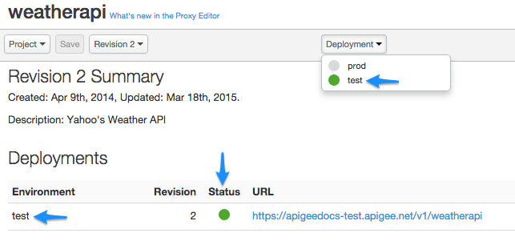

[toc]
This topic provides a quick overview of proxy deployment. You can deploy proxies using the mangement UI, command-line scripts, or with APIs.
A proxy must be deployed before it can be invoked. Generally, it's up to you when you deploy. When you are working in a test environment, you may deploy iteratively many times. On the other hand, the decision to deploy a proxy from the test environment to a production environment usually depends on lifecycle rules established by your development team.
Deploy or redeploy a proxy when you:
You deploy a proxy to an environment. All organizations in Apigee Edge, by default, have two environments called test and prod. These environments are merely designed to provide you with one area to work on and test API changes, and another area where APIs are exposed to apps. The following figure shows a proxy that is deployed to the test environment, as indicated by the green dot.

Depending on your role, you may not be able to deploy to all environments. Users can only deploy to the test environment. If you're an administrator you can deploy to any environment.
How you deploy a proxy depends on where you are developing the proxy. If you are working in the UI, you can easily deploy a proxy with just a couple of mouse clicks. A new proxy is automatically deployed when you create it; you don't have to do anything special. The procedure for redeploying an existing proxy is almost as simple. Just select which deployment environment to deploy to, and the management UI takes care of the rest. For more information, see http://docs.apigee.com/node/14756.
If you are developing proxies and related components offline (that is, working with proxy XML files and other code directly on your filesystem), Apigee Edge provides a convenient command-line deployment tool that you can use. You can also obtain a sample shell script that you can configure and run to upload and deploy your proxy files. For more information, see http://docs.apigee.com/node/14757.
Finally, you can use the Edge management API to deploy proxies. The deployment APIs expose atomic functions that your development team can coordinate to automate and optimize your API development lifecycle. See http://docs.apigee.com/node/8405.
Revisions let you manage API proxy updates as you create and deploy them to an environment. Revisions are sequentially numbered, enabling you to revert a change by deploying a previous revision of your API proxy. Only one revision of an API proxy can be deployed in an environment at a given time if revisions share the same API proxy base path. However, by changing the base path, you can deploy multiple versions of an API proxy in the same environment. For more information, see http://docs.apigee.com/node/14756.
Typically, an existing revision must be undeployed before a new one can be deployed. Other advanced options include overwriting a deployed revision or opting not to increment a revision at all. For example, sometimes when you make minor changes, you might not want to increment the revision. These advanced options can be accomplished through direct calls to the Edge management API. See http://docs.apigee.com/node/8405.
You can deploy a revision of an API proxy into the prod environment, while continuing to create new revisions of that API proxy in the test environment. When you are ready, you can "promote" the higher revision of your API proxy from the test environment over the prior revision of the API proxy in the prod environment.
For more information on revisions, see http://docs.apigee.com/node/8405 and http://docs.apigee.com/node/14756.
For Apigee's thoughts and recommendations on API versioning, see Versioning in the Web API Design: The Missing Link e-book.